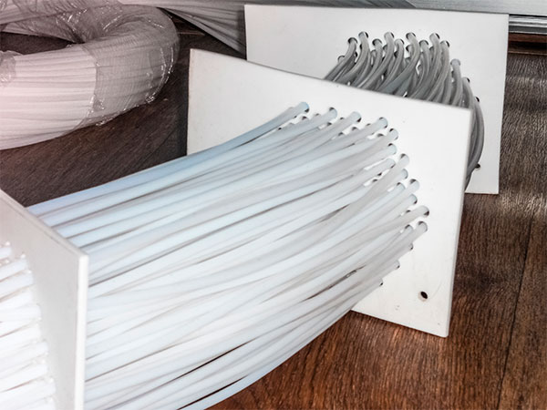

Фторопластовые теплообменники стойки к воздействию агрессивных сред, таких как серная кислота, соляная, азотная и другие минеральные концентрированные кислоты и могут быть использованы для любых хладагентов в широком интервале температур.
Мы предлагаем Вам следующее техническое решение взамен используемых металлических теплообменников.
1. Многослойная или «пучковая» система фторопластовых труб позволяет достичь любой площади теплообмена.
2. Исполнение узла крепления головок теплообменника может быть любым в зависимости от устройства подачи хладагента.
3. Требуемое производством расположение теплообменной аппаратуры достигается за счет дополнительного фторопластового каркаса, что обеспечивает требуемый гарантийный срок эксплуатации.
ООО «СВС» приглашает к сотрудничеству в сфере поставок теплообменников фторопластовых погружного типа.